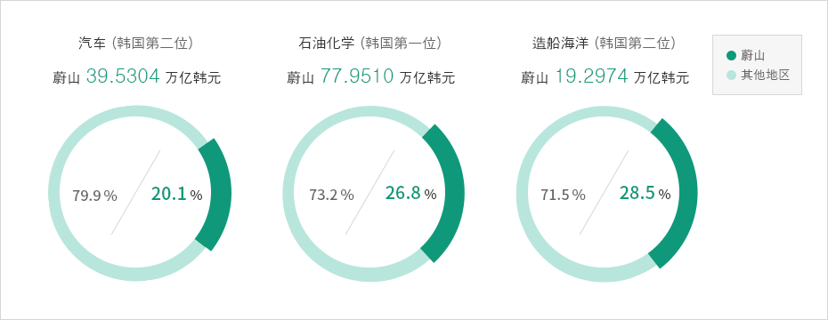

一般现况
- Home
- 蔚山介绍
- 一般现况
蔚山是牵动21世纪东北亚地区经济繁荣与发展的充满盎然生机的城市。
东北亚战略性产业基地
蔚山位于韩半岛东南部，全年气候温暖，基本没有风灾水害，具有得天独厚的环境条件。 蔚山人口有120万，面积达1,060㎢，是首尔的1.7倍。
蔚山位于海洋与陆地交接处，陆海交通十分便利。 同时开通有2小时以内抵达北京、 上海、 香港、 东京、大阪等东亚主要城市的航线，拥有优越基地战略性环境条件。

蔚山基本信息
| 人口(2017年) | 人均GRDP(2017年) | 面积(2017年) | 行政区域(2017年) |
|---|---|---|---|
| 120 万名 | 53,000美元 | 1,060㎢ | 4自治区、1郡 |
蔚山气候
| 平均气温(2017年) | 14.1 ℃ | 1月 | 2.0 ℃ | 8月 | 25.9 ℃ |
|---|---|---|---|---|---|
| 降水量(2017年) | 671.4㎜ | 1月 | 15.3m | 8月 | 69.8mm |
拥有广阔后方市场的东北亚中心城市
东北亚包含韩国、 中国、 日本、 台湾等地拥有世界25%的人口，产值达世界GDP的22%，是全球经济中快速增长发展的经济板块。 预计2020年左右，东北亚地区将可创出世界GDP的30%，将是未来全球经济增长的引擎。 东北亚地区以其激情与强劲增长 动力牵动世界经济的发展，而蔚山屹立其中。
东北亚经济潜力

蔚山经济实力（截止2017年）
地区总产值占比：4.4% -712,364亿韩元 / -16,355,554亿韩元
制造业产值占比：1.8% -1,676,057亿韩元 / -14,190,701亿韩元
出口占比：11.6% -66,638百万美元 / -573,717百万美元
进口占比：6.3% -30,215百万美元 / -478,414百万美元
港湾吞吐量：12.9% -202,346千吨 / -1,574,343千吨

韩国最大的产业集群
汽车、造船海洋、化学作为蔚山主导产业，形成了韩国最大产业集群。 各个产业有机结合、 寻求共同发展，联动蔚山附近釜山、 浦项、 昌原地区钢铁、 机械、 港湾领域，发挥出优于其它产业集群、更加充满活力和生机的协同效果。
蔚山拥有代表亚洲的产业集群，它将为各界投资人士提供各种商业机遇和更具吸引力的投资环境。
蔚山主力产业（2017年，产值）


汽车：韩国第二位
-蔚山：20.1% / -其他地区：79.9%
-蔚山：39.5304万亿韩元
造船海洋：韩国第二位
-蔚山：28.5% / -其他地区：771.5%
-蔚山：19.2974万亿韩元
石油化学：韩国第一位
-蔚山：26.8%/-其他地区：73.2%
-蔚山：77.9510万亿韩元

生态城市--蔚山
秀丽的自然环境
蔚山周边海拔1000米以上的伽智山、神佛山和肝月山形成了岭南阿尔卑斯山脉，犹如屏风一样怀抱整个城市， 清澈的太和江贯穿市区，每年有成群鲢鱼洄游。 蔚山是坐落在东海岸的一座美丽的城市，海边有朱田、亭子和镇下海滩。
城市环境舒适靓丽
蔚山拥有文化艺术会馆、 蔚山博物馆、 世界杯场馆、蔚山大公园等各种文化体育设施，以及大型百货商场、 综合流通卖场、 特级酒店、大学附属医院等生活便利设施，周边自然景色秀丽迷人，让城市环境更舒适靓丽。
-
 艮绝岬日出
艮绝岬日出 -
盘龟台
-
 从舞龙山望去的蔚山工业园区夜景
从舞龙山望去的蔚山工业园区夜景 -
 神佛山紫芒平原/酌掛川
神佛山紫芒平原/酌掛川